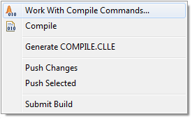
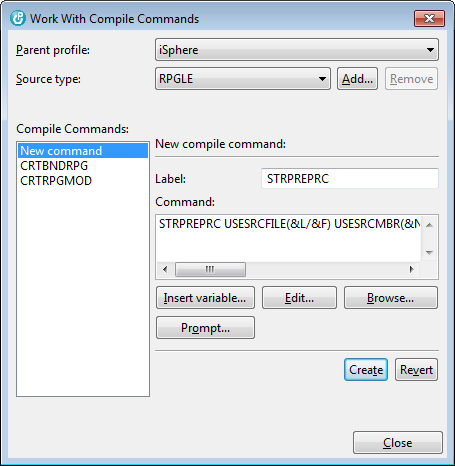

The Start Pre-Processor is used to retrieve the compile command and the compile parameters from the source member and compile the object afterwards. This way, object specific compile parameters can be stored in the source member without any risk of getting lost.
The iSphere project team uses the STRPREPRC utility to compile all objects of the iSphere library.
Another advantage of the utility is that you do not need to use different object creation commands, but STRPREPRC for all object types.
Furthermore you can use it for creating non-source objects from source. The iSphere data area ISPHERE, which contains version information, is a good and elaborated example for that. All you need for simple objects is a source member with the STRPREPRC section with the CL command for creating the object. But for the iSphere data area we do it slightly different, because we want to initialize the data area with certain values. For that purpose we compile a CL program into QTEMP and afterwards execute it to create and initialize the data area.
The STRPREPRC utility is shipped with the iSphere library and it is up to you to take advantage from it. A good starting point is the following 'general purposes' command:
Open the i Projects perspective and select the Work With Compile Commands... option from the context menu of your i Project or a source member.

Then add the STRPREPRC command to the source member types that you want to use the STRPREPRC utility for:
